인간공학기사 (2014-03-02 기출문제)
1과목: 인간공학개론
1. 인간-기계 시스템에서 정보 전달과 조종이 이루어지는 접합면인 인간-기계 인터페이스(man-machine interface)의 종류에 해당하지 않는 것은?
- 지적 인터페이스
- 역학적 인터페이스
- 감성적 인터페이스
- 신체적 인터페이스
(정답률: 52%)

2. 다음 중 최적의 C/R비 설계시 고려사항으로 틀린 것은?
- 계기의 조절시간이 가장 짧게 소요되는 크기를 선택한다.
- 짧은 주행시간 내에서 공차의 안전범위를 초과하지 않는 계기를 마련한다.
- 작업자의 눈과 표시장치의 거리는 주행과 조절에 크게 관계된다.
- 조종장치의 조작시간 지연은 직접적으로 C/R비와 관계없다.
(정답률: 84%)
3. 다음 중 인간의 후각 특성에 대한 설명으로 틀린 것은?
- 훈련을 통하면 식별 능력을 향상시킬 수 있다.
- 특정한 냄새에 대한 절대적 식별 능력은 떨어진다.
- 후각은 특정 물질이나 개인에 따라 민감도의 차이가 있다.
- 후각은 냄새 존재 여부보다는 특정 자극을 식별하는데 사용되는 것이 효과적이다.
(정답률: 89%)
4. 다음 중 음 세기(Sound Intensity)에 관한 설명으로 옳은 것은?
- 음 세기의 단위는 Hz이다.
- 음 세기는 소리의 고저와 관련이 있다.
- 음 세기는 단위시간에 단위 면적을 통과하는 음의 에너지를 말한다.
- 음압수준(Sound Pressure Level) 측정시 주로 1000Hz 순음을 기준으로 음압으로 사용한다.
(정답률: 84%)
5. 다음 중 시각적 표시장치보다 청각적 표시장치를 사용해야 유리한 경우는?
- 정보의 내용이 긴 경우
- 정보의 내용이 복잡한 경우
- 정보의 내용이 후에 재참조되는 경우
- 정보의 내용이 시간적 사상을 다루는 경우
(정답률: 88%)
6. 다음 중 인체계측지에 있어 기능적(functional)치수를 사용하는 이유로 가장 올바른 것은?
- 인간은 닿는 한계가 있기 때문
- 사용 공간의 크기가 중요하기 때문
- 인간이 다양한 자세를 취하기 때문
- 각 신체부위는 조화를 이루면서 움직이기 때문
(정답률: 75%)
7. 다음 중 인간공학의 개념과 가장 거리가 먼 것은?
- 효율성 제고
- 안전성 제고
- 독창성 제고
- 편리성 제고
(정답률: 94%)
8. 동일한 조건에서 선택가능한 대안의 수가 2에서 8로 증가하였다. 선택반응시간은 몇 배 늘었는가? (단, 대안의 수가 없을 때 반응시간은 0이라고 가정한다.)
- 1
- 2
- 3
- 4
(정답률: 91%)
9. 각각의 변수가 다음과 같을 때 정보량을 구하는 식으로 틀린 것은?
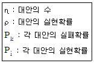
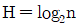
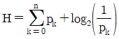
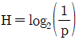
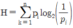
(정답률: 90%)
10. 다음 중 청각적 신호의 식별에 관한 설명으로 틀린 것은?
- JND가 클수록 자극 차원의 변화를 쉽게 검출할 수 있다.
- 1kHz 이하의 순음들에 대한 JND는 작으나, 그 이상의 주파수에서 JND는 급격히 커진다.
- 청각적 코드로 전달할 정보량이 많을 때에는 다차원 코드 시스템을 사용한다.
- 주변 소음이 있는 경우 음의 은폐효과가 나타날 수 있다.
(정답률: 62%)
11. 다음 중 작업공간에 각종 장비 및 장치들의 배치하기 위해 사용하는 원칙이 아닌 것은?
- 비용 절감의 원리
- 중요도의 원리
- 사용 순서의 원리
- 사용 빈도의 원천
(정답률: 95%)
12. 다음 중 시식별에 영향을 주는 요소로서 관련이 가장 적은 것은?
- 시력
- 표적의 형태
- 밝기
- 물체 크기
(정답률: 80%)
13. 다음 중 시스템의 성능 평가척도를 옳게 설명한 것은?
- 적절성-평가척도가 시스템의 목표를 잘 반영해야 한다.
- 신뢰성-측정하려는 변수 이외의 다른 변수들의 영향을 받지 않아야 한다.
- 무오염성-비슷한 관경에서 평가를 반복할 경우에 일정한 결과를 나타낸다.
- 실제성-기대되는 차이에 적합한 단위로 측정할 수 있어야 한다.
(정답률: 85%)
14. 다음 중 일반적인 인간-기계 시스템 내에서의 기본 4가지 기능에 해당되지 않는 것은?
- 정보저장(Information storage)
- 정보감지(Information sensing)
- 정보처리(Information processing)
- 정보변환(Information transformation)
(정답률: 83%)
15. 다음 중 눈의 구조와 관련된 시각기능에 대한 설명으로 올바르지 않은 것은?
- 빛에 대한 감도변화를 ‘조응’이라 한다.
- 디옵터(diopter)는 ‘1/초점거리(m)'로 정의된다.
- 정상인에게 정상 시각에서의 원점은 거의 무한하다.
- 암순응은 명순응보다 빨리 진행되어 1분 정도에 끝난다.
(정답률: 83%)
16. 다음 중 인간의 작업 기억(working memory)에 관한 설명으로 틀린 것은?
- 정보를 감지하여 작업 기억으로 이전하기 위해서 주의(attention) 자원이 필요하다.
- 청각정보보다 시각정보를 작업 기억 내에 더 오래 기억할 수 있다.
- 작업 기억의 정보는 감각, 신체, 작업코드의 세 가지로 코드화된다.
- 작업 기억 내에 정보의 의미 있는 단위(chunk)로 저장이 가능하다.
(정답률: 60%)
17. 다음 중 암호체계 사용상의 일반적인 지침과 가장 거리가 먼 것은?
- 정보를 암호화한 자극은 검출이 가능해야 한다.
- 모든 암호 표시는 감지장치에 의하여 다른 암호표시와 구별되어서는 안 된다.
- 자극과 반응간의 관계가 인간의 기대와 모순되지 않아야 한다.
- 2가지 이상의 암호차원을 조합해서 사용하면 정보전달이 촉진된다.
(정답률: 44%)
18. 청각의 특성 중 2개음 사이의 진동수 차이가 얼마 이상이 되면 울림(beat)이 들리지 않고 각각 다른 두 개의 음으로 들리는가?
- 33Hz
- 50Hz
- 81Hz
- 101Hz
(정답률: 90%)
19. 어떤 인체측정 데이터가 정규분포를 따른다고 한다. 제50백분위수(percentile)가 100mm이고, 표준편차가 5mm일 때 정규분포곡선에서 제95백분위수는 얼마인가?(오류 신고가 접수된 문제입니다. 반드시 정답과 해설을 확인하시기 바랍니다.)
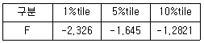
- 88.37mm
- 91.775mm
- 106.41mm
- 108.225mm
(정답률: 24%)
20. 글자체의 인간공학적 설계에 관한 설명으로 적합하지 않은 것은?
- 문자나 숫자의 높이에 대한 획 굵기의 비를 획폭비라 한다.
- 흰 숫자의 경우, 최적 독해성을 주는 획폭비는 1:3정도이다.
- 흰 모양이 주의의 검은 배경으로 번지어 보이는 현상을 광상(Irradiation) 현상이라 한다.
- 숫자의 경우, 표준 종횡비로 약 3:5를 권장하고 있다.
(정답률: 62%)
2과목: 작업생리학
21. 일정(constant) 부하를 가진 작업수행 시 인체의 산소 소비변화를 나타낸 그래프는?
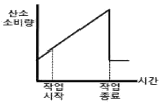
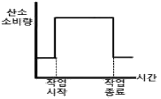
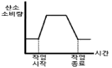
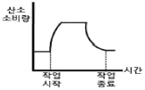
(정답률: 87%)
22. 다음 중 산소를 이용한 유기성(호기성) 대사과정으로 인한 부산물이 아닌 것은?
- H2O
- 젖산
- CO2
- 에너지
(정답률: 86%)
23. 다음 중 1촉광(candle power)이 발하는 광량은 약 어느 정도인가?
- 1π루멘
- 2π루멘
- 4π루멘
- 8π루멘
(정답률: 74%)
24. 생리적 활동의 척도 중 Borg의 RPE척도에 대한 설명으로 적절하지 않은 것은?
- 육체적 작업부하의 주관적 평가기법이다.
- NASA-TLX와 동일한 평가척도를 사용한다.
- 척도의 양끝은 최소 심장 박동률과 최대 심장박동률을 나타낸다.
- 작업자들이 주관적으로 지각한 신체적 노력의 정도를 6~20 사이의 척도로 평정한다.
(정답률: 83%)
25. 다음 중 작업장 실내에서 일반적으로 추천반사율이 가장 높은 곳은?
- 천정
- 바닥
- 벽
- 책상면
(정답률: 91%)
26. 네 모서리에 저울 역할을 하는 무게 센서가 설치된 힘판(force plate) 위에 한 사람이 서 있다. 네 모서리에서 무게가 각각 20, 20, 30, 30kg이라면 이 사람의 몸무게는 얼마인가? (단, 아무런 물체가 없을 때의 네 모서리 무게는 0으로 설정되어 있다.)
- 50kg
- 70kg
- 100kg
- 120kg
(정답률: 78%)
27. 다음 중 신체의 관상 면을 따라 팔이나 다리 옆으로 들어 올리는 동작 유형을 무엇이라 하는가?
- 외전(abduction)
- 회전(rotation)
- 굴곡(flexion)
- 내전(adduction)
(정답률: 79%)
28. 다음 중 육체 활동에 따른 에너지소비량이 가장 큰 것은?
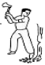
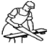
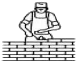
(정답률: 87%)
29. 다음 중 은폐(masking) 현상에 관한 설명으로 옳은 것은?
- 일정한 강도 및 진동수 이상의 소음에 노출되었을 때 점차 청각 기능을 잃게 되는 현상이다.
- 음의 한 성분이 다른 성분에 대한 귀의 감수성을 감소시키는 상황이다.
- 동일한 소음을 내는 설비 2대가 동시에 가동될 때 소음 수준이 3dB 정도 증가하는 현상이다.
- 소음 수준(dB)이 같은 3가지 음이 합쳐졌을 때 음의 강도가 일정하게 증가되는 현상이다.
(정답률: 84%)
30. 다음 중 상온에서 추운 환경으로 바뀔 때 신체의 조절 작용이 아닌 것은?
- 피부 온도가 내려간다.
- 몸이 떨리고 소름이 돋는다.
- 직장(直腸)온도가 약간 올라간다.
- 피부를 순환하는 혈액량은 증가한다.
(정답률: 71%)
31. 다음 중 점멸융합수파수에 관한 설명으로 옳은 것은?
- 중추신경계의 정신피로의 척도로 사용된다.
- 마음이 긴장되었을 때나 머리가 맑을 때의 점멸융합주파수는 낮아진다.
- 쉬고 있을 때 점멸융합주파수는 대략 10~20Hz이다.
- 작업시간이 경과할수록 점명융합주파수는 높아진다.
(정답률: 80%)
32. 다음 중 기체 교환에 의해 혈액으로 유입된 산소가 전신으로 운반되는 형태로 올바른 것은?
- 산화 혈색소 형태
- 중탄산 이온 형태
- 용해 이산화탄소 형태
- 혈장단백질과 결합된 형태
(정답률: 71%)
33. 유세포 기능이 정상적으로 움직이기 위해서는 내부 환경이 적정한 범위 내에서 조절되어야 한다. 이것을 자율신경계에 의한 신경성 조절과 내분비계에 의한 체액성 조절에 의해서 유지되고 있는데 다음 중 그 특징으로 옳은 것은?
- 신경성 조절은 조절속도가 빠르고 효과가 길다.
- 신경성 조절은 조절속도가 빠르고 효과가 짧다.
- 내분비계 조절은 조절속도가 빠르고 효과가 짧다.
- 내분비계 조절은 조절속도가 빠르고 효과가 길다.
(정답률: 67%)
34. 근육운동 중 근육의 길이가 일정한 상태에서 힘을 발휘하는 운동을 나타내는 것은?
- 등장성 운동
- 등축성 운동
- 등척성 운동
- 단축성 운동
(정답률: 91%)
35. 하루 8시간 근무시간 중 6시간 동안 철판조립 작업을 수행하고, 2시간 동안 서류 작업 및 휴식을 하는 작업자가 있다. 작업자의 산소소비량은 철판조립 작업 시 2.1L/min 서류 작업 및 휴식시 0.2L/min인 것으로 측정되었다. 이 작업자가 하루 근무 시간 중 소비하는 에너지 소비량은 얼마인가? (단, 산소소비량 1L의 에너지 등간즌 5kcal이다.)
- 3800kcal
- 3900kcal
- 4400kcal
- 4500kcal
(정답률: 54%)
36. 다음 중 음(音)에 관한 설명으로 옳은 것은?
- sone과 phon의 환산식 sone=2[phon-20/10]이다.
- 1000Hz 순음의 60dB 음의 세기 레벨의 음의 크기를 1sone이라고 한다.
- sone의 값이 2배로 증가하면 감각의 양은 4배로 증가한다.
- 어떤 음의 음량 수준을 나타내는 phon값은 이 음과 같은 크기로 들리는 1000Hz 순음의 음압 수준(dB)을 의미한다.
(정답률: 79%)
37. 다음 중 평활근과 관련이 없는 것은?
- 민무늬근
- 내장근
- 불수의근
- 골격근
(정답률: 75%)
38. 다음 중 근육 운동에 있어 장력이 활발하게 생기는 동안 근육이 가시적으로 단축되는 수축을 무엇이라 하는가?
- 연축(twitch)
- 강축(tetanus)
- 편심성 수축(eccentric conteaction)
- 동심성 수축(concentric conteaction)
(정답률: 58%)
39. 다음 중 조명 또는 진동에 관한 설명으로 틀린 것은?
- 산업안전보건법령상 상시작업하는 장소와 초정밀작업시 작업면의 조도는 750럭스 이상으로 한다.
- 전신진동은 진폭에 반비례하여 추적 작업에 대한 효율을 떨어뜨리며, 20~25Hz 범위에서 심해진다.
- 진동을 측정하는 방법은 주파수 분석계, 가속도계 등이 있다.
- 반사 휘광이 처리 방법으로는 간접 조명 수준을 높이고 발광체의 강도를 줄인다.
(정답률: 50%)
40. 다음 중 사무실공기관리지침에 따라 사무실의 공기를 관리하고자 할 때 오염물질의 관리기준이 잘못된 것은?
- 석면은 0.01개/cc 이하이어야 한다.
- 일산화탄소(CO)는 10ppm 이하이어야 한다.
- 이산화탄소(CO2)의 농도는 100ppm 이하이어야 한다.
- 포름알데히드(HCHO)의 농도가 0.1ppm 이하이어야 한다.
(정답률: 80%)
3과목: 산업심리학 및 관계법규
41. 다음 중 안전관리의 개요에 관한 설명으로 틀린 것은?
- 안전의 3요소로는 Engineering, Education, Economy를 말한다.
- 안전의 기본원리는 사고방지차원에서의 산업재해 예방활동을 통해 무재해를 추구하는 것이다.
- 사고방지를 위해서 현장에 존재하는 위험을 찾아내어 이를 제거하거나 위험성(lisk)을 최소화한다는 위험통제의 개념이 적용되고 있다.
- 안전관리란 생산성 향상과 재해로부터 손실을 최소화하기 위하여 행하는 것으로 재해의 원인 및 경과의 규명과 재해방지에 필요한 과학기술에 관한 개봉적 지식체계의 관리를 말한다.
(정답률: 90%)
42. 다음 중 인간수행에 스트레스가 미치는 영향을 극소화 하는 방법으로 옳은 것은?
- 스트레스 대처법은 디자인 해결법과 개인적인 해결법이 있다.
- 응급상황에 대처하기 위해 분산적인 훈련이 매우 유용하다.
- 정보 지원에 대한 지각적 해소화가 일어나면 정보를 다양화시킨다.
- 규칙적인 호흡을 이용한 정상적 이완을 각성상태를 유지할 수 없어 수행을 저해시킨다.
(정답률: 63%)
43. 다음 중 민주형 리더십의 특징에 관한 설명으로 틀린 것은?
- 자발적 행동이 나타났다.
- 구성원 간의 상호관계가 원만하다.
- 맥그리거의 X 이론에 근거를 둔다.
- 모든 정책이 집단 토의나 결정에 의해서 이루어진다.
(정답률: 86%)
44. 다음 중 직무스트레스에 관한 설명으로 틀린 것은?
- 성격이 A형인 사람들은 B형에 비해 스트레승레 노출될 가능성이 훨씬 높다.
- 스트레스가 아주 없는 상황에서는 순기능 스트레스로 작용한다.
- 내적 통제자들을 외적 통제자들보다 스트레스를 적게 받는다.
- 스트레스 수준의 측정방법으로 생리적 변환측정, 설문조사법 등이 있다.
(정답률: 66%)
45. 다음 중 안전관리조직에 있어 명령계통이 일원화되는 반면 전문적 기술의 확보가 어렵고, 소규모 조직에 적용하기 용이한 조직의 형태는?
- 라인 조직
- 스텝조직
- 관음 조직
- 위원회 조직
(정답률: 84%)
46. 다음 중 선택반응시간(Hick의 법칙)과 동작시간(Fitts의 법칙)의 공식에 대한 설명으로 옳은 것은?
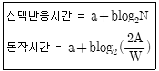
- N은 감각기관의 수, A는 목표물의 너비, W는 움직인 거리를 나타낸다.
- N은 자극과 반응의 수, A응 목표물의 너비, W는 움직인 거리를 나타낸다.
- N은 감각기관의 수, A는 움직인 거리, W는 목표물의 너비를 나타낸다.
- N은 자극과 반응의 수, A은 움직인 거리, W는 목표물의 너비를 나타낸다.
(정답률: 66%)
47. 다음 중 강도율(Severity Rate of injury)에 관한 설명으로 옳은 것은?
- 연간근로시간 1,000,000시간당 발생한 재해발생건수를 말한다.
- 개인이 평생 근무 시 발생할 수 있는 근로손실일수를 말한다.
- 재해 사건 당 발생한 평균근로손실일수를 말한다.
- 연간 근로시간 1,000 시간당 발생한 근로손실일수를 말한다.
(정답률: 71%)
48. 다음 중 집단행동에 있어 이성적 집단보다는 감정에 의해 좌우되며 공격적이라는 특징을 갖는 행동은?
- crowd
- mob
- panic
- fashion
(정답률: 87%)
49. 리더십은 교육 훈련에 의하여 향상되므로, 좋은 리더는 육성할 수 있다는 가정을 하는 리더십이론은?
- 특성접근법
- 상황접근법
- 행동접근법
- 제한적 측질접근법
(정답률: 80%)
50. 다음과 같은 재해발생시 재해 조사 분석 및 사후처리에 대한 내용으로 틀린 것은?
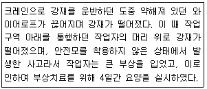
- 재해 발생형태는 추락이다.
- 재해의 기인물은 크레인이고, 가해물은 강재이다.
- 불안전한 상태는 약해진 와이어로프이고, 불안전한 행동은 안전모 미착용과 위험구역 접근이다.
- 산업재해조사표를 작성하여 관할 지방고용노동청장에게 제출하여야 한다.
(정답률: 87%)
51. 작업자의 휴먼에러 발생확률이 0.⑤로 일정하고, 다른 작업과 독립적으로 실수를 한다고 가정할 때, 8시간 동안 에러의 발생 없이 작업을 수행할 신뢰도는 약 얼마인가?
- 0.60
- 0.67
- 0.66
- 0.95
(정답률: 56%)
52. 다음 중 인간의 행동이 어떻게 동기유발이 되는가에 중점을 둔 과정이론(process theory)이 아닌 것은?
- 공정성이론(equity theory)
- 기대이론(expectancy theory)
- X=Y이론(theory X and theory Y)
- 목표설정이론(goal-setting theory)
(정답률: 60%)
53. 평정오류 중 평가자가 평가대상자의 수행에 대하여 제한된 지식을 가지고 있음에도 불구하고 다양한 수행차원 모두에서 획일적으로 줄거나 또는 나쁜 수행을 나타낸다고 평가하는 것은?
- 후광 오류
- 확증편파 오류
- 중앙집중 오류
- 과잉확신 오류
(정답률: 62%)
54. 뇌파의 유형에 따라 인간의 의식수준을 단계별로 분류할 수 있다. 다음 중 의식이 명료하며 가장 적극적인 활동이 이루어지고 실수의 확률이 가장 낮은 단계는?
- Ⅰ단계
- Ⅱ단계
- Ⅲ단계
- Ⅳ단계
(정답률: 82%)
55. 다음 설명에 해당하는 시스템안전 분석기법은?
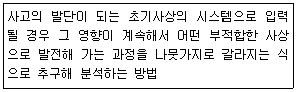
- ETA
- FTA
- FMEA
- THERP
(정답률: 55%)
56. 다음 중 집단 간 갈등의 원인과 가장 거리가 먼 것은?
- 영역 모호성
- 집단 간의 목표차이
- 제한된 자원
- 조직구조의 개편
(정답률: 74%)
57. 보행 신호등이 막 바뀌어도 자동차가 움직이기까지는 아직 시간이 있다고 스스로 판단하여 건널목을 건너는 것과 같은 부주의 행위와 가장 관계가 깊은 것은?
- 근도반응
- 생력행위
- 억측 판단
- 초조반응
(정답률: 87%)
58. 작업 후 가스밸브를 잠그는 것을 잊었다. 이로 인해 사고가 발생할 뻔 했으나 안전밸브장치에 의해 가스가 자동으로 차단되었다. 이런 경우 작업자가 범한 휴먼에러의 종류와 안전밸브 장치에 작용은 안전설계의 원칙이 올바르게 나열된 것은?
- Omission error 와 Inter lock 설계원칙
- Omission error 와 Fail-Safe 설계원칙
- Commission error 와 Inter lock 설계원칙
- Commission error 와 Fail-Safe 설계원칙
(정답률: 54%)
59. 제조, 유통, 판매된 제조물의 경향으로 인해 발생한 사고에 의해 소비자나 사용자 또는 제 3자의 생명, 신체, 재산 등에 손해가 발생한 경우에 그 제조물을 제조, 판매한 공급업자가 법률상의 손해배상 책임을 지도록 하는 것은?
- 제조물 기술
- 제조물 결함
- 제조물 배상
- 제조물 책임
(정답률: 63%)
60. 다음 중 사고예방 대책을 위한 기본원리 5단계를 올바르게 나열한 것은?
- 사실의 발견→안전조직→분석평가→시정책 선정→시정책 적용
- 안전조직→사실의 발견→분석평가→시정책 선정→시정책 적용
- 안전조직→분석평가→사실의 발견→시정책 선정→시정책 적용
- 사실의 발견→분석평가→안전조직→시정책 선정→시정책 적용
(정답률: 72%)
4과목: 근골격계질환 예방을 위한 작업관리
61. 다음 중 1시간을 TMU로 환산한 것은?
- 0.036TMU
- 27.8TMU
- 1667TMU
- 100,000TMU
(정답률: 75%)
62. 평균관측시간이 1분, 레이팅 계수가 110%, 여유시간이 하루 8시간 근무 중에서 24분일 때 외경법을 적용하면 표준시간은 약 얼마인가?
- 1.235분
- 1.135분
- 1.255분
- 1.155분
(정답률: 48%)
63. 다음 중 NIOSH의 들기 작업 지침에서 들기지수(LI)를 올바르게 나타낸 것은? (단, HM은 수평계수, VM은 수직계수, DM은 거리계수, AM은 비대칭계수, FM은 비틀림계수, CM은 클램프계수를 의미한다.)
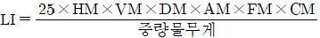
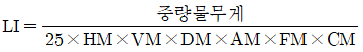
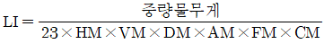
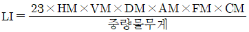
(정답률: 68%)
64. 동작경경제의 원칙 중 신체사용에 관한 원칙에서 손목을 축으로 하는 손동작은 몇 등급에 해당되는가?
- 1등급
- 2등급
- 3등급
- 4등급
(정답률: 65%)
65. 다음 중 수행도 평가기법이 아닌 것은?
- 속도 평가법
- 평준화 평가법
- 합성 평가법
- 사이클 그래프 평가법
(정답률: 66%)
66. 다음 중 손과 손목 부위에 발생하는 근골격계 질환이 아닌 것은?
- 경겹증
- 건초염
- 외상과염
- 수근관 증후근
(정답률: 77%)
67. 유해요인 조사 방법 중 RULA에 관한 설명으로 틀린 것은?
- 각 작업 자세는 신체 부위별로 A와 B그룹으로 나누어진다.
- 전신 자세를 평가할 목적으로 개발된 유해요인 조사방법이다.
- 작업에 대한 평가는 1점에서 7점 사이의 총점으로 나타내어, 점수에 따라 4개의 조치단계로 분류된다.
- RULA를 평가하는 작업부하인자는 동작의 횟수, 정적의 근육작업, 힘, 작업 자세 등이다.
(정답률: 58%)
68. 다음 중 근골격계질환의 직접적인 유해 요인과 가장 거리가 먼 것은?
- 야간 교대 작업
- 무리한 힘의 사용
- 높은 빈도의 반복성
- 부자연스러운 자세
(정답률: 84%)
69. 다음 중 근골격계 부담작업의 유해요인조사를 해야하는 상황이 아닌 것은?
- 근골격계 질환자가 발생한 경우
- 근골격계 부담 작업에서 해당하는 기존의 동일한 설비가 도입된 경우
- 근골격계 부담 작업에 해당하는 업무의 양과 작업 공장 등 작업환경이 바뀐 경우
- 법에 의한 임시건강진단 등에서 근골격계 질환자가 발생하였거나 근로자가 근골격계 질환으로 업무상 질병으로 인정받은 경우
(정답률: 81%)
70. 다음 중 수공구의 설계관리로 적절하지 않은 것은?
- 손목 대신 손잡이를 굽히도록 한다.
- 지속적인 정적 근육부하를 피하도록 한다.
- 측정 손가락의 반복동작을 피하도록 한다.
- 손끝이 표면의 홈은 되도록 깊게 하고, 그 수는 가능한 많이 제작한다.
(정답률: 86%)
71. 동작분석의 종류 중에서 미세 동작분석에 관한 설명으로 틀린 것은?
- 복잡하고 세밀한 작업 분석이 가능하다.
- 직접 관측자가 옆에 없어도 측정이 가능하다.
- 작업 내용과 작업 시간을 동시에 측정할 수 있다.
- 타 분석법에 비하여 작은 시간과 비용으로 연구가 가능하다.
(정답률: 76%)
72. 각각 한 명의 작업자가 배치되어 있는 세 개의 라인으로 구성된 공정에서 각 공정시간이 2분, 3분, 4분일 때, 공정 효율은 얼마인가?
- 85%
- 70%
- 75%
- 80%
(정답률: 68%)
73. 다음 중 디자인 개념의 문제 해결 방식에 있어서 문제의 특성을 파악하기 위한 척도로서 가장 거리가 먼 것은?
- 체크리스트
- 제약조건
- 연구기간
- 평가 기준
(정답률: 55%)
74. 다음 중 앉아서 작업을 해야 하는 경우로 가장 적절한 것은?
- 정밀 작업을 해야 하는 경우
- 작업시 큰 힘이 요구되는 경우
- 신체 동작이 아래 위로 큰 경우
- 작업 중 자주 움직여야 하는 경우
(정답률: 88%)
75. 다음 중 근골격계질환의 예방에서 단기적 관리방안으로 볼 수 없는 것은?
- 안전한 작업방법의 교육
- 작업자에 대한 휴식시간의 배려
- 근골격계질환 예방관리 프로그램의 도입
- 휴게실, 운동시설 등 기타 관리시설의 확충
(정답률: 84%)
76. 다음 중 동작연구를 통한 작업개선안 도출을 위해 문제가 되는 작업에 대하여 가장 우선적이고, 근본적으로 고려해야 하는 것은?
- 작업의 제거
- 작업의 결합
- 작업의 변경
- 작업의 단순화
(정답률: 77%)
77. 간헐적으로 랜덤한 시점에서 연구대상을 순간적으로 관측하여 대상이 처한 상황을 파악하고 이를 토대로 관측시간 동안에 나타난 항목별로 차지하는 비율을 추정하는 방법은?
- PIS법
- 워크샘플링
- 웨스팅하우스법
- 스톱워치를 이용한 시간연구
(정답률: 79%)
78. 다음 중 공정도에 사용되는 공정 도시기호인 “○”으로 표시하기에 가장 적합한 것은?
- 작업 대상물을 다른 장소로 옮길 때
- 작업 대상물이 분해되거나 조합될 때
- 작업 대상물을 지정된 장소에 보관할 때
- 작업 대상물이 올바르게 시행되었는지를 확인할 때
(정답률: 80%)
79. 다음 중 근골격계 질환 예방, 관리 교육에서 근로자에 대한 필수적인 교육내용으로 틀린 것은?
- 근골격계 질환 발생시 대처요령
- 근골격계 부담 작업에서의 유해요인
- 예방, 관리 프로그램의 수립 및 운영방법
- 작업도구와 장비 등 작업시설의 올바른 사용 방법
(정답률: 87%)
80. 다음 중 파레토 차트에 관한 설명으로 틀린 것은?
- 제고관리에서는 ABC 곡선으로 부르기도 한다.
- 20% 정도에 해당하는 중요한 항목을 찾아내는 것이 목적이다.
- 불량이나 사고의 원인이 되는 중요한 항목을 찾아 관리하기 위함이다.
- 작성 방법은 빈도수가 낮은 항목부터 큰 항목 순으로 차례대로 나열하고, 항목별 점유비율과 누적비율을 구한다.
(정답률: 84%)